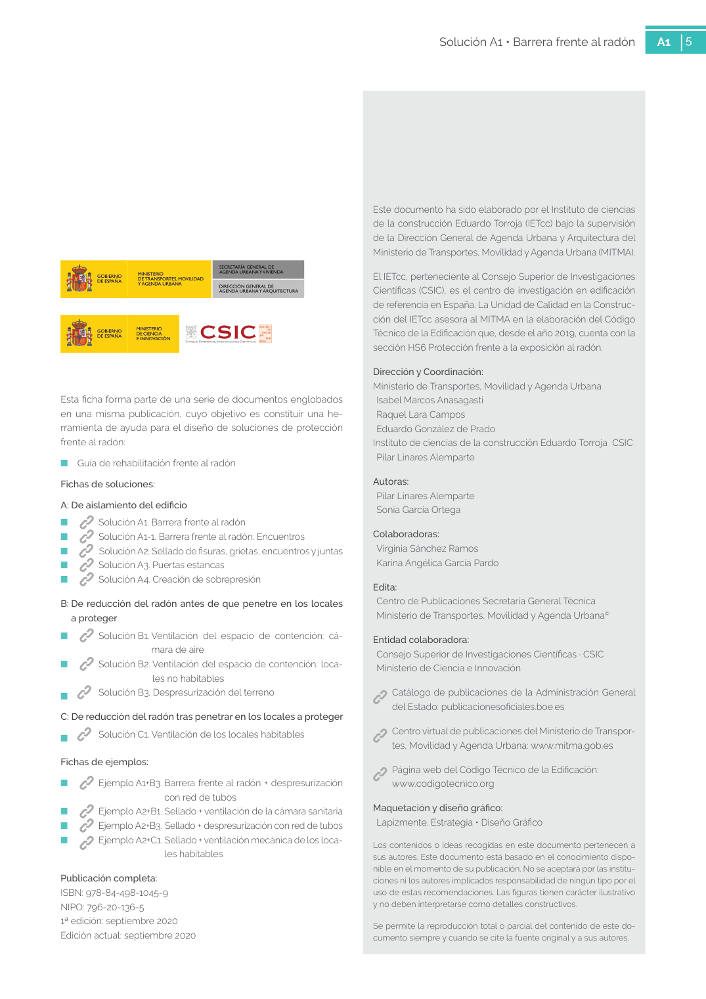

<!doctype html>
<html lang="es"><head><meta charset="utf-8">
<meta name="viewport" content="width=device-width, initial-scale=1">
<title>5 	 encuentro con pilar 6 	 encuentro con fachada / sección HS6 Protección frente a la exposición al radón.</title><link rel="stylesheet" href="../estilo.css">
</head><body>
<nav><a href="../index.html">Índice</a> › <a href="../doc/guia-pdf-d97e92f2f27e-sin-fecha-1e18ef06574e.html">GUIA</a></nav>

<h1>5 	 encuentro con pilar 6 	 encuentro con fachada / sección HS6 Protección frente a la exposición al radón.</h1>
<header class="meta"><p><strong>Solucion A1 Barrera frente al radon</strong> · edición sin-fecha · capa guia</p>
<p>Documento <code>GUIA-PDF-d97e92f2f27e</code> · SHA-256 del PDF <code>1e18ef06574e87590ff769e33ce39fcdc557ca6f46fe4c8ccf23f268dd432808</code></p>
<p><a href="../../contenido/docs/GUIA-PDF-d97e92f2f27e/sin-fecha__1e18ef06574e/fuente.pdf">Copia fiel del PDF fuente</a> · <a href="https://www.codigotecnico.org/pdf/GuiasyOtros/GuiaRadon/Solucion_A1_Barrera_frente_al_radon.pdf">Fuente oficial</a></p>
<p><a href="https://www.codigotecnico.org/Guias/GuiaRadon.html">Ficha de la disposición en la fuente oficial</a></p>
<div class="cita"><p><a href="../../contenido/docs/GUIA-PDF-d97e92f2f27e/sin-fecha__1e18ef06574e/fuente.pdf#page=5">Créditos y autoría en el PDF fuente</a>. Reproducción con cita de fuente y autores.</p>
<p>Permiso literal: Se permite la reproducción total o parcial del contenido de este do­ Edición actual: septiembre 2020 cumento siempre y cuando se cite la fuente original y a sus autores.</p>
<details><summary>Leer los créditos completos y la autoría</summary><pre class="literal">                                                                Solución A1 • Barrera frente al radón   A1  55


                                                                     Este documento ha sido elaborado por el Instituto de ciencias
                                                         de la construcción Eduardo Torroja (IETcc) bajo la supervisión
                                                         de la Dirección General de Agenda Urbana y Arquitectura del
                                                                             Ministerio de Transportes, Movilidad y Agenda Urbana (MITMA).

                                                             SECRETARÍA GENERAL DE
                                                  AGENDA URBANA                                                                     Y VIVIENDA                              MINISTERIO            GOBIERNO                                                                              El IETcc, perteneciente al Consejo Superior de Investigaciones                          DE                               TRANSPORTES,                                          MOVILIDAD
            DE ESPAÑA      Y                         AGENDA                                URBANA                                                        DIRECCIÓN                                                                GENERAL                                                                      DE
                                                  AGENDA URBANA Y ARQUITECTURA                   Científicas (CSIC), es el centro de investigación en edificación
                                                         de referencia en España. La Unidad de Calidad en la Construc­
                                                                       ción del IETcc asesora al MITMA en la elaboración del Código
                              MINISTERIO            GOBIERNO                         DE                               CIENCIA                                             Técnico de la Edificación que, desde el año 2019, cuenta con la            DE ESPAÑA                                E INNOVACIÓN
                                                                   sección HS6 Protección frente a la exposición al radón.

                                                                    Dirección y Coordinación:
                                                                            Ministerio de Transportes, Movilidad y Agenda Urbana
Esta ficha forma parte de una serie de documentos englobados        Isabel Marcos Anasagasti
en una misma publicación, cuyo objetivo es constituir una he­       Raquel Lara Campos
rramienta de ayuda para el diseño de soluciones de protección       Eduardo González de Prado
frente al radón:                                                                  Instituto de ciencias de la construcción Eduardo Torroja CSIC
                                                                                      Pilar Linares Alemparte
■  Guía de rehabilitación frente al radón

Fichas de soluciones:                                                 Autoras:
                                                                                      Pilar Linares Alemparte
A: De aislamiento del edificio                                                                   Sonia García Ortega
■       Solución A1. Barrera frente al radón
■       Solución A1-1. Barrera frente al radón. Encuentros              Colaboradoras:
■       Solución A2. Sellado de fisuras, grietas, encuentros y juntas         Virginia Sánchez Ramos
■       Solución A3. Puertas estancas                                   Karina Angélica García Pardo
■       Solución A4. Creación de sobrepresión
                                                                               Edita:
B: De reducción del radón antes de que penetre en los locales       Centro de Publicaciones Secretaría General Técnica
  a proteger                                                               Ministerio de Transportes, Movilidad y Agenda Urbana©

■       Solución B1. Ventilación del espacio de contención: cá­                                                                  Entidad colaboradora:
                 mara de aire                                                                Consejo Superior de Investigaciones Científicas · CSIC
■       Solución B2. Ventilación del espacio de contención: loca­                                                                             Ministerio de Ciencia e Innovación
                      les no habitables
■       Solución B3. Despresurización del terreno                        Catálogo de publicaciones de la Administración General
                                                                         del Estado: publicacionesoficiales.boe.es
C: De reducción del radón tras penetrar en los locales a proteger
■       Solución C1. Ventilación de los locales habitables                  Centro virtual de publicaciones del Ministerio de Transpor­
                                                                                         tes, Movilidad y Agenda Urbana: www.mitma.gob.es

Fichas de ejemplos:
                                                                     Página web del Código Técnico de la Edificación:
■      Ejemplo A1+B3. Barrera frente al radón + despresurización          www.codigotecnico.org
                    con red de tubos
■      Ejemplo A2+B1. Sellado + ventilación de la cámara sanitaria      Maquetación y diseño gráfico:
■      Ejemplo A2+B3. Sellado + despresurización con red de tubos       Lapizmente. Estrategia • Diseño Gráfico
■      Ejemplo A2+C1. Sellado + ventilación mecánica de los loca-                                                                     Los contenidos o ideas recogidas en este documento pertenecen a
                          les habitables                                   sus autores. Este documento está basado en el conocimiento dispo­
                                                                                    nible en el momento de su publicación. No se aceptará por las institu­
Publicación completa:                                                    ciones ni los autores implicados responsabilidad de ningún tipo por el
ISBN: 978-84-498-1045-9                                             uso de estas recomendaciones. Las figuras tienen carácter ilustrativo
NIPO: 796-20-136-5                                                   y no deben interpretarse como detalles constructivos.
1ª edición: septiembre 2020                                                               Se permite la reproducción total o parcial del contenido de este do­
Edición actual: septiembre 2020                                    cumento siempre y cuando se cite la fuente original y a sus autores.</pre></details></div>
<div class="aviso"><strong>Alcance y límites</strong><ul><li>Extracción automática sin revisión técnica humana completa. Contraste tablas, fórmulas, notas y excepciones con el PDF. La edición disponible no determina la vigencia ni la aplicabilidad a un proyecto.</li><li>Guia o documento divulgativo; no es texto normativo.</li><li>Extracción automática; el cotejo humano está pendiente.</li><li>Semántica y tablas no equivalen a validación exhaustiva.</li></ul></div></header>
<div class="cita">ID técnico a0020 · páginas físicas <a href="../pagina/guia-pdf-d97e92f2f27e-sin-fecha-1e18ef06574e__p0005.html">5</a></div>
<nav><a href="guia-pdf-d97e92f2f27e-sin-fecha-1e18ef06574e__a0019.html">← a0019</a></nav>
<p>Formatos: <a href="../../contenido/docs/GUIA-PDF-d97e92f2f27e/sin-fecha__1e18ef06574e/apartado/a0020__seccion-hs6-proteccion-frente-a-la-exposicion-al-radon.json">JSON del segmento</a> · <a href="../../contenido/docs/GUIA-PDF-d97e92f2f27e/sin-fecha__1e18ef06574e/apartado/a0020__seccion-hs6-proteccion-frente-a-la-exposicion-al-radon.md">Markdown</a></p>
<pre class="literal">sección HS6 Protección frente a la exposición al radón.
Dirección y Coordinación:
Ministerio de Transportes, Movilidad y Agenda Urbana
Isabel Marcos Anasagasti
Raquel Lara Campos
Eduardo González de Prado
Instituto de ciencias de la construcción Eduardo Torroja  CSIC
Pilar Linares Alemparte
Autoras:
Pilar Linares Alemparte
Sonia García Ortega
Colaboradoras:
Virginia Sánchez Ramos
Karina Angélica García Pardo
Edita:
Centro de Publicaciones Secretaría General Técnica
Ministerio de Transportes, Movilidad y Agenda Urbana©
Entidad colaboradora:
Consejo Superior de Investigaciones Científicas · CSIC
Ministerio de Ciencia e Innovación
 
Catálogo de publicaciones de la Administración General
del Estado: publicacionesoficiales.boe.es
 Centro virtual de publicaciones del Ministerio de Transpor­
tes, Movilidad y Agenda Urbana: www.mitma.gob.es
 Página web del Código Técnico de la Edificación:
www.codigotecnico.org
Maquetación y diseño gráfico:
Lapizmente. Estrategia • Diseño Gráfico
Los contenidos o ideas recogidas en este documento pertenecen a
sus autores. Este documento está basado en el conocimiento dispo­
nible en el momento de su publicación. No se aceptará por las institu­
ciones ni los autores implicados responsabilidad de ningún tipo por el
uso de estas recomendaciones. Las figuras tienen carácter ilustrativo
y no deben interpretarse como detalles constructivos.
Se permite la reproducción total o parcial del contenido de este do­
cumento siempre y cuando se cite la fuente original y a sus autores.
Esta ficha forma parte de una serie de documentos englobados
en una misma publicación, cuyo objetivo es constituir una he­
rramienta de ayuda para el diseño de soluciones de protección
frente al radón:
■
Guía de rehabilitación frente al radón
Fichas de soluciones:
A: De aislamiento del edificio
■
Solución A1. Barrera frente al radón
■
Solución A1-1. Barrera frente al radón. Encuentros
■
Solución A2. Sellado de fisuras, grietas, encuentros y juntas
■
Solución A3. Puertas estancas
■
Solución A4. Creación de sobrepresión
B: De reducción del radón antes de que penetre en los locales
a proteger
■
Solución B1. Ventilación del espacio de contención: cá­
mara de aire
■
Solución B2. Ventilación del espacio de contención: loca­
les no habitables
■
Solución B3. Despresurización del terreno
C: De reducción del radón tras penetrar en los locales a proteger
■
Solución C1. Ventilación de los locales habitables
Fichas de ejemplos:
■
Ejemplo A1+B3. Barrera frente al radón + despresurización
con red de tubos
■
Ejemplo A2+B1. Sellado + ventilación de la cámara sanitaria
■
Ejemplo A2+B3.  Sellado + despresurización con red de tubos
■
Ejemplo A2+C1. Sellado + ventilación mecánica de los loca-
les habitables
Publicación completa:
ISBN: 978-84-498-1045-9
NIPO: 796-20-136-5
1ª edición: septiembre 2020
Edición actual: septiembre 2020
SECRETARÍA GENERAL DE
AGENDA URBANA Y VIVIENDA
DIRECCIÓN GENERAL DE
AGENDA URBANA Y ARQUITECTURA
GOBIERNO
DE ESPAÑA
MINISTERIO
DE TRANSPORTES, MOVILIDAD
Y AGENDA URBANA
GOBIERNO
DE ESPAÑA
MINISTERIO
DE CIENCIA
E INNOVACIÓN</pre>
<figure><a href="../../contenido/docs/GUIA-PDF-d97e92f2f27e/sin-fecha__1e18ef06574e/figura/p0005.png"></a><figcaption>Página visual 5, para contrastar fórmulas, tablas y figuras.</figcaption></figure>
<footer>Generado estáticamente desde el corpus normalizado; sin JavaScript ni servicios externos. El HTML es una vista reproducible; conserve la fuente y la edición al citar.</footer>
</body></html>
